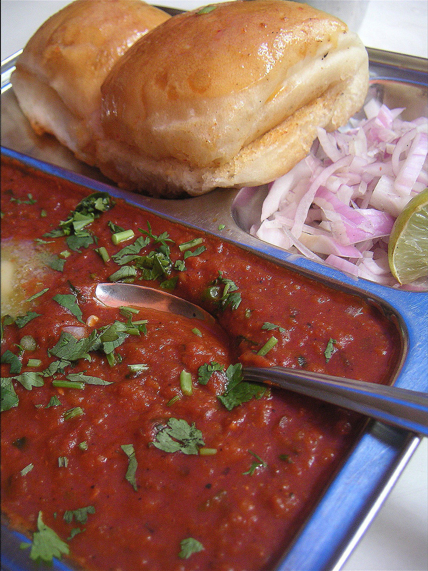

Pav Bhaji

Description
Pav bhaji is a fast food dish from India consisting of a thick vegetable curry (bhaji) served with a soft bread roll (pav).
Its origins are in the state of Maharashtra.
Ingredients
- 1/2 cup vegetable oil
- 1 teaspoon chopped garlic
- 1/2 teaspoon finely chopped green chile peppers
- 1/2 cup chopped onions
- 1 teaspoon grated fresh ginger
- 1/2 cup chopped roma (plum) tomatoes
- 1 cup cauliflower, finely chopped
- 1/2 cup chopped cabbage
- 1/2 cup green peas
- 1/2 cup grated carrots
- 2 potatoes, boiled and mashed
- 1 1/2 tablespoons pav bhaji masala
- salt to taste
- 1/2 tablespoon lemon juice
- 4 (2 inch square) dinner rolls
- 3/4 teaspoon butter
- 2 tablespoons finely chopped onion
- 1/2 tablespoon finely chopped green chile peppers
- 2 tablespoons chopped fresh cilantro
Steps
- Heat the oil in a wok over medium heat. Saute garlic and green chile for 30 seconds, then stir in onions and ginger. Cook until onions are brown. Add tomatoes, and cook until pasty. Stir in cauliflower, cabbage, peas, carrots and potatoes. Season with pav bhaji masala. Cover, and cook for 15 minutes, stirring occasionally. Season with salt, and stir in lemon juice.
- Toast the dinner rolls, and spread lightly with butter. Serve garnished with chopped onion, green chile and cilantro.